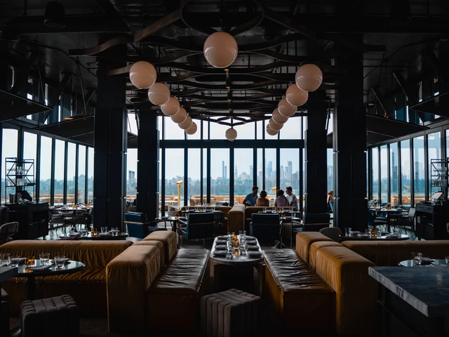
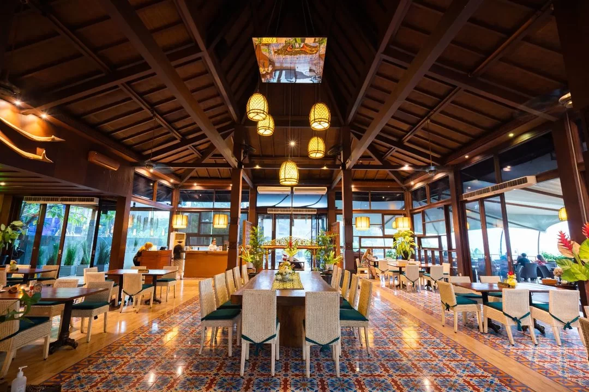

Nikmati Hidangan Terbaik di Cita Rasa Resto
Tentang Kami
PT. Cita Rasa Resto adalah perusahaan restoran yang telah berdiri sejak tahun 2010, menghadirkan pengalaman kuliner terbaik dengan cita rasa nusantara dan internasional. Kami telah berhasil mengembangkan berbagai cabang dan melayani ribuan pelanggan setia.
Projek & Cabang Restoran

Cabang Jakarta
Restoran flagship dengan konsep modern elegan.

Cabang Bali
Restoran dengan nuansa tropis, cocok untuk wisatawan.

Cabang Yogyakarta
Melayani berbagai acara perusahaan & pernikahan.
Testimoni Pelanggan
"Makan malam di Cita Rasa Resto sungguh luar biasa, pelayanan ramah dan makanan enak!"
- Dian, Jakarta
"Restoran terbaik yang pernah saya kunjungi. Konsep interiornya keren banget."
- Budi, Surabaya